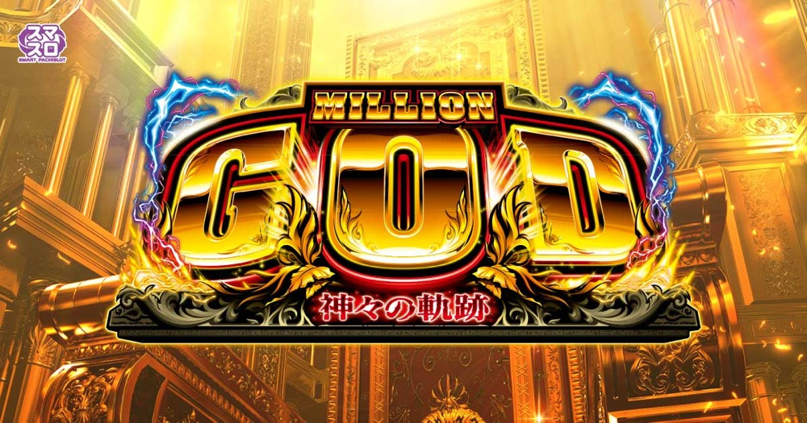

スマスロ ミリオンゴッド‐神々の軌跡‐
50GのGOD GAMEからG-ZONEへ。Z-GAME・SGG・GOD揃いでGGストックを重ねる。
- 導入
- 2026年4月
- メーカー
- ミズホ
- 分類
- パチスロ
主要スペック
液晶奇数揃いから純増約7.0枚/G・50GのGOD GAMEへ。5GのG-ZONE、0揃いからのZ-ZONE／Z-GAME、赤7のSGG、GOD揃いのPREMIUM GOD GAMEまでを専用画面で体験できます。
- GOD GAMEは50G・純増約7.0枚/G
- G-ZONEは5Gで次セットを告知
- GOD揃いは1/16384・GG4セット以上＋高ループ
スマスロ ミリオンゴッド‐神々の軌跡‐の見どころと計算条件
液晶奇数揃いから純増約7.0枚/G・50GのGOD GAMEへ。5GのG-ZONE、0揃いからのZ-ZONE／Z-GAME、赤7のSGG、GOD揃いのPREMIUM GOD GAMEまでを専用画面で体験できます。
ミリオンゴッド 神々の軌跡を数字で早分かり
GOD GAMEからGOD GAME、PREMIUM GOD GAMEまでの流れと、設定ごとの結果差を固定レートで比較できます。
30秒で分かるミリオンゴッド 神々の軌跡
50GのGGを消化し、5GのG-ZONEで次セットを開きながらZ-GAME・SGG・GOD揃いによるストックを狙うセット管理型です。
こんな遊び方に向いている
- G-ZONEのPUSHで次セットを確認したい
- Z-ZONEの黄7履歴からZ-GAMEを狙いたい
- SGGやGOD揃いのストック連鎖を体験したい
遊ぶ前に確認したいこと
- 純増・主要ゲーム数・赤7／GOD確率は公開値
- ストックとループ抽選を個別表示
- 未公表の選択率は体験用代表値
50GのGOD GAMEと5GのG-ZONE
GOD GAMEは1セット50G・純増約7.0枚/G。消化中はレア役や小役履歴でGGストックを抽選し、終了後は5GのG-ZONEで次セットを告知します。
専用画面ではGGを50Gまで進め、G-ZONEの最後にPUSHで奇数揃いを開きます。ストックまたはループ抽選に当選していれば次のGGへ進み、どちらもなければ終了します。
0揃いからZ-ZONE・Z-GAMEへ
Z-ZONEは5G＋αのフルナビ区間で、黄7は約1/1.4。黄7履歴を5個埋めるとGGストックを獲得し、Z-GAMEへ移行します。
Z-GAMEでは黄7が成立するたびにGGを1セット上乗せします。シミュレーターは黄7履歴を1Gずつ表示し、5連達成後に獲得ストック数をPUSHで開きます。
赤7のSGG
赤7揃いは約1/6900でSGGへ。SGGは1セット10〜100G、継続率約75%で、セット中の赤7揃いによりGGストックを獲得します。
専用画面ではSGGのセットゲーム数、継続ジャッジ、獲得したGGストックを分けて表示します。赤7確率やセット振り分けは公表値を優先し、未公表の細部は代表値です。
GOD揃いはGG4セット以上
GOD揃いは1/16384。PREMIUM GOD GAMEへ移行し、GG4セット以上と高継続ループストックが濃厚、期待枚数は3000枚以上とされています。
GOD揃いは実際の確率に近い低確率で抽選し、当選時は専用PUSHのあと4セットをストックし、ループ率を強化します。毎回発生する演出ではありません。
固定条件と簡略化する範囲
- 約30.8G/50枚・1,000円46枚貸し・5.2枚交換で固定
- 設定1〜6を均等抽選し、GG初当りは公開設定別値を使用
- GG50G、G-ZONE5G、Z-ZONE黄7約1/1.4、赤7・GOD確率を反映
- 内部モード、全役別抽選、ループストック選択率、特化ゾーン振り分けは代表値
- 19,000枚到達時はコンプリート表示
平均Gと投資目安の計算
掲載するGOD GAME初当り約1/532.8は設定1基準です。当サイトでは50枚あたり30.8G、1,000円46枚貸しの固定条件から、設定1基準の平均投資目安を約18,800円と計算します。
シミュレーターでは設定1〜6を均等抽選します。設定1〜6で公開されている初当り値を個別に使います。公開されていない特化ゾーン・上位到達率の設定差は加えません。 換金は5.2枚交換で固定し、結果とランキングに設定を表示します。
シミュレーション結果の見方
当るまでGOD GAME・GOD GAMEまでのゲーム数
設定設定1・2・3・4・5・6から抽選された今回の設定
上位到達GOD揃いとPREMIUM GOD GAMEへの到達
最終収支差枚と5.2枚交換の収支目安
結果は自動で「マイ記録」に保存され、同じ機種を何回試したか、最高収支、勝率をあとから確認できます。
簡易シミュレーターについて
GOD GAME・GOD GAME・PREMIUM GOD GAMEの流れを固定条件で体験できます。JavaScriptを有効にすると、この位置にシミュレーター、演出、マイ記録、機種別ランキングが表示されます。
結果は娯楽・確率理解のための参考表示です。金銭的価値や交換価値はなく、実際の勝敗や収支を保証しません。18歳未満の方の利用はお控えください。
ミリオンゴッド 神々の軌跡のよくある質問
ミリオンゴッド 神々の軌跡はどんな台？
液晶奇数揃いから純増約7.0枚/G・50GのGOD GAMEへ。 GOD GAMEは50G・純増約7.0枚/Gが主な確認ポイントです。
ミリオンゴッド 神々の軌跡の平均投資目安は？
設定1基準のGOD GAME初当り約1/532.8と、50枚あたり30.8G・46枚貸しの固定条件から、平均18,800円を目安として表示します。実際の設定や遊技状況で結果は変わります。
設定とゲームの流れはどう抽選する？
開始時に設定1・2・3・4・5・6から1つを均等抽選し、GOD GAME、GOD GAME、GOD揃い、PREMIUM GOD GAMEの順で到達を判定します。設定は最終結果とランキングに表示します。
収支はどう計算する？
1,000円46枚貸し・5.2枚交換の固定条件で投資、換金、収支目安を計算します。実店舗の再プレイ、持ちメダル、端数処理は含みません。